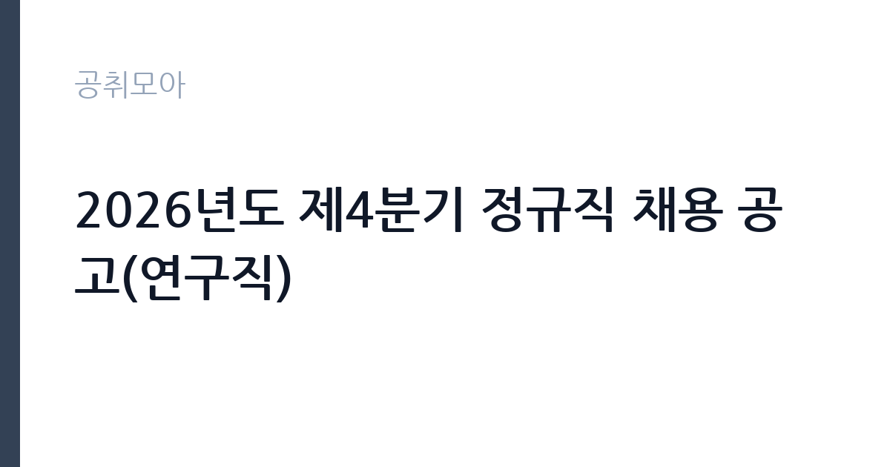

[공공기관] 2026년도 제4분기 정규직 채용 공고(연구직)
한국세라믹기술원 · 경기 · 마감 2026-10-29 (D-15) · 출처 잡알리오

한눈에 보는 모집 조건
| 기관 | 한국세라믹기술원 |
|---|---|
| 공고명 | 2026년도 제4분기 정규직 채용 공고(연구직) |
| 고용형태 | 정규직 |
| 근무지 | 경기 |
| 게시일 | 2026-10-15 |
| 마감일 | 2026-10-29 (D-15) |
지원자격, 이렇게 읽으세요
- 공공기관 채용공시
- 세부 조건은 원문 공고문 확인
지원자격은 기술원 인사규정 제7조의 결격사유와 제20조의 직원정년에 해당하지 않고, 남성은 병역을 필하거나 면제받았으며, 임용 예정일에 즉시 근무가 가능한 자입니다. 채용 분야별 자격(전공과 학위, 경력 요건)과 가점 자격은 공고문에서 따로 정하므로 원문을 확인하시기 바랍니다. 연구직은 전공 적합성과 연구 실적이 당락을 가르므로 논문과 특허, 과제 참여 실적을 빠짐없이 정리하시기 바랍니다. 블라인드 채용 적용 시 편견 유발 항목 기재에 유의하시기 바랍니다.
이 공고의 포인트
이 공고의 포인트는 세라믹 분야 종합연구기관의 정규직 연구 자리라는 점입니다. 광전자와 에너지환경, 기계구조, 바이오, 나노융복합 소재와 세라믹 공정기술까지 연구 스펙트럼이 넓어 전공을 살릴 분야가 많습니다. 근무지가 경기로 표기되어 이천분원 등 경기 거점 배치가 유력하므로 거주 계획을 함께 세우시기 바랍니다. 같은 시기 위촉연구원과 박사후연수연구원도 함께 모집되므로 본인 경력 단계에 맞는 트랙을 고르시기 바랍니다.
전형은 어떻게 진행되나
세부 전형 단계는 원문 공고문에서 확인하셔야 합니다. 정규직 연구직 채용은 일반적으로 서류전형과 필기 또는 전공 평가, 발표 면접으로 진행됩니다. 연구 실적과 연구계획서 평가 비중이 높으므로 실적 증빙을 완비하시기 바랍니다. 발표 면접이 있다면 본인 연구를 10분 내외로 설명하는 자료를 미리 준비하시기 바랍니다. 임용 예정일은 최종합격자 선발 후 협의합니다.
원문에서 확인한 전형 방식
- 기술원 「인사 규정」 제7조(결격사유)에 해당하지 않는 자 - 기술원 「인사 규정」 제20조(직원정년)에 해당하지 않는 자 - 남성의 경우 병역을 필하였거나 면제된 자 - 임용 예정일에 즉시 근무가 가능한 자(임용 예정일은 최종합격자 선발 후 협의할 예정) - 채용 분야별 자격과 가점 자격은 공고문 참고
이런 분께 추천해요
- 세라믹과 소재 분야 정규직 연구자를 목표로 하는 석사와 박사
- 연구 실적과 실험 역량을 갖춘 경력 연구원
- 경기 연구거점 근무가 가능한 분
지원 전 체크리스트
- 전공과 학위, 경력 등 분야별 자격을 원문에서 대조했습니다
- 논문과 특허, 과제 참여 실적 증빙을 준비했습니다
- 연구계획서와 발표 자료를 준비했습니다
- 결격사유와 정년, 병역 요건을 충족하는지 확인했습니다
모집 일정과 제출 타이밍
마감은 10월 29일이며, 정규직 연구직은 서류와 평가, 발표 면접으로 전형이 길어 11월에서 12월까지 이어질 수 있습니다. 발표 면접 대비 자료를 마감 전부터 준비하시기 바랍니다. 결과 발표는 채용 홈페이지를 통해 단계별로 공지되는 경우가 많으니 수시로 확인하시기 바랍니다.
직무 이해하기: 공공기관
정규직 연구직은 연구과제의 기획과 수행, 실험과 분석, 논문과 특허 산출, 시험분석과 기업지원을 맡습니다. 세라믹기술원은 전통세라믹부터 첨단세라믹까지 아우르는 국내 유일 수준의 세라믹 종합연구기관으로, 소재 국산화와 기업 기술지원의 허브 역할을 합니다. 연구자는 과제 수주와 수행, 성과 확산까지 연구 전주기를 경험하게 됩니다.
자기소개서 작성 팁
정규직 연구직 지원서는 연구계획서가 핵심입니다. 지원 분야의 연구 동향과 본인 실적의 연결, 입사 후 연구 목표와 산출 계획을 구체적으로 쓰시기 바랍니다. 보유 장비 활용 능력과 협업, 과제 수주 경험을 적어 기여 가능성을 보여주시기 바랍니다. 가점 자격은 증빙과 함께 명확히 기재하고 블라인드 위반 항목에 유의하시기 바랍니다.
면접 준비 포인트
면접에서는 연구 실적과 전문성, 연구 비전을 묻는 경우가 많으며 발표 평가가 포함될 수 있습니다. 본인 연구를 비전공 면접관도 이해할 수 있게 설명하는 연습을 해가시기 바랍니다. 연구 윤리와 안전, 협업 경험을 묻는 질문에도 사례 중심으로 답하시기 바랍니다. 경기 근무지와 장기근무 의지를 명확히 밝히시기 바랍니다.
급여·근무조건 읽는 법
정규직 연구직의 정확한 초임은 원문 공고문과 임용 시 호봉 책정에 따라 정해지므로 원문에서 확인하셔야 합니다. 참고 수치로 세라믹기술원의 대졸 초임은 약 3,183만원 수준으로 알려져 있습니다(잡코리아 기업정보 기준, 공식 공시가 아니므로 실제와 다를 수 있으며, 연구직의 학위별 초임은 이와 다릅니다). 공공기관 정규직 보수는 통상 호봉제 기본급에 상여와 명절휴가비, 정액급식비, 가족수당 등 수당이 더해지는 구조입니다. 기본급과 수당, 상여를 구분한 정확한 보수표는 임용 안내와 원문에서 확인하시기 바랍니다. 실수령액은 세전 총액에서 4대보험 본인부담금과 소득세를 제외한 금액이 됩니다.
자주 묻는 질문
- 누가 지원할 수 있나요?
결격사유와 정년에 해당하지 않고 남성은 병역필 또는 면제, 즉시 근무 가능자입니다. 전공과 학위, 경력 등 분야별 자격은 원문에서 반드시 확인하시기 바랍니다. - 초임은 어느 정도인가요?
대졸 초임 약 3,183만원 수준으로 알려져 있으나(잡코리아 기업정보 기준, 공식 공시 아님), 연구직 학위별 초임은 다르므로 원문과 임용 안내에서 확인하시기 바랍니다. - 근무지는 어디인가요?
근무지가 경기로 표기되어 이천분원 등 경기 거점 배치가 유력합니다. 정확한 배치 부서는 원문 공고문에서 확인하시기 바랍니다.
함께 보면 좋은 공고
[공공기관] 2026년 한국도로공사 교통량 조사 기간제 근로자(사무원) 채용공고 — 마감 2026-10-28[공공기관] 2026년도 제4분기 체험형 인턴 채용 공고(장애인 채용) — 마감 2026-10-29[공공기관] 2026년도 제4분기 체험형 인턴 채용 공고(인턴사무원) — 마감 2026-10-29출처: 잡알리오 공개정보를 바탕으로 공취모아가 정리한 안내글입니다. 모집 조건·일정은 변경될 수 있으니 지원 전 반드시 원문 공고문을 확인하세요. 본 글은 정보 제공용이며 합격을 보장하지 않습니다.